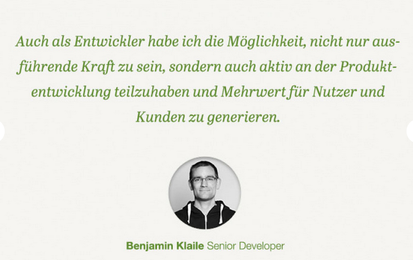
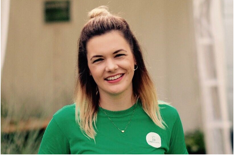
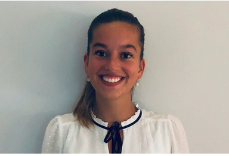

Wir bei Chefkoch glauben, gemeinsam schmeckt es besser. Gemeinsames Hinterfragen, Weiterentwickeln,
Lernen
und
Klotzen stehen deshalb im Mittelpunkt unserer Arbeit. So liefern wir unseren Nutzer:innen das Rezept für
gemeinsame Momente des Glücks und unterstützen sie im gesamten Kochprozess.
Mit bis zu 22 Mio. Unique Usern pro Monat ist Chefkoch Europas reichweitenstärkste Plattform im Bereich
Kochen
und Rezepte und zählt zu den reichweitenstärksten Onlineportalen in Deutschland. Die Chefkoch GmbH ist mit
Sitz
in Bonn eine 100%ige Tochtergesellschaft der Gruner + Jahr GmbH. Seit 1998 betreiben wir das Kochportal
Chefkoch.de und sind seitdem auf über 100 Mitarbeiter:innen angewachsen. Damit geben wir uns aber nicht
zufrieden: wir planen, weiterzuwachsen! Fühlst Du Dich angesprochen?
Offene Stellen – wie für Dich gemacht!
Als Remote-first-Company bieten wir maximale Flexibilität: Du entscheidest, ob Du zu Hause oder im Büro
arbeiten
möchtest. Als neugierige Teamplayer arbeiten wir mit Leidenschaft daran, uns und Chefkoch ständig
weiterzuentwickeln. Wenn Du gerne in flachen Hierarchien arbeitest und es Dir wichtig ist, im Team Ziele zu
erreichen, freuen wir uns auf Deine Bewerbung.
Wir haben viel vor – und freuen uns deshalb auf tatkräftige Unterstützung. Dich erwarten herausfordernde
Aufgaben, die Deine Lösungsorientierung fordern. Fragt man unsere Chefköch:innen, ist ihnen jede Mühe wert.
Sie
liefern Dir fünf Argumente, Deine Zelte abzubrechen und Dich jetzt bei Chefkoch zu bewerben:

Was Bewerber:innen wissen wollen
Wir werden häufig gefragt, in welcher Form die Bewerbung bei uns eingehen soll und wie der
Recruiting-Prozess
abläuft. Die wichtigsten Informationen rund um Deine Bewerbung fassen wir nachfolgend zusammen.
Wie ist eure Postadresse? Ich würde euch gerne meine Bewerbungsmappe schicken.
Wir sind ein digitales Unternehmen, deshalb passen zu uns nur digitale Bewerbungen. Also spar dir das Geld
für
eine Bewerbungsmappe und kauf dir davon lieber ein Stück Kuchen!
Wie geht's weiter, wenn ich meine Bewerbung abgeschickt habe?
Nach dem Eingang deiner Bewerbung sichten wir Deine Unterlagen. Wenn Dein Profil mit unseren Anforderungen
an
neue Chefköche:innen übereinstimmt, dann kommt es zu einem ersten Telefoninterview (optional) oder direkt zu
einem ersten persönlichen Kennenlernen. Geht es in die zweite Runde, erfolgt ein weiteres Gespräch mit dem
Abteilungsleiter und HR sowie ein zusätzlicher fachlicher Austausch mit dem Team.
Müsst ihr eigentlich "stempeln"?
Wir gehen davon aus, dass Teams am besten arbeiten können, wenn sie ihre Arbeitszeit frei gestalten können.
Deswegen arbeiten wir bei Chefkoch nach dem Prinzip der Vertrauensarbeitszeit. Was genau dahinter steckt,
erläutern wir dir gerne in einem Vorstellungsgespräch. Fest steht nur: wir haben eine 40-Stunden-Woche und
30
Tage Jahresurlaub. Aber an Heilig Abend und Silvester gibt's jeweils einen halben Urlaubstag extra.
Duzt oder siezt ihr euch?
Du hast es ja schon bei der Stellenausschreibung gemerkt: uns kannst Du duzen. Das ist bei uns so üblich.
Wundere Dich also nicht, wenn wir Dich schon beim Bewerbungsgespräch mit einem freundlichen "Hallo, wie
geht's
dir?" begrüßen. Selbstverständlich duzen wir nicht nur unsere Bewerber:innen, die Bewerber:innen duzen uns
auch.
Was könnte ich bei einem Vorstellungsgespräch anziehen?
Aktuell finden alle Vorstellungsgespräche digital via Teams statt. Anzug und Kostüm kannst du im Schrank
lassen.
Wir bezeichnen unseren Kleidungsstil als Casual (Chic).
So kontaktierst Du uns
So neuer Chefkoch:in! Wenn wir Dich überzeugt haben, freuen wir uns auf Deine Bewerbung. Sei mutig
und
zeig
uns,
wer Du bist - oder wie man im Rheinland sagen würde: et hätt noch emmer joot jejange!
Gerne kannst du uns auch per WhatsApp kontaktieren: 01515 7523091

Marina Creuzberg
HR Managerin
Ist seit September 2015 ein Chefkoch und freut sich jeden Tag über zahlreiche spannende
Bewerbungen.
Am
liebsten hat sie Bewerber:innen, die sich vor dem ersten Gespräch über Chefkoch informiert
haben.
Aber
übertreiben muss man's auch nicht!

Lena Johnen
Recruiterin
Unterstützt im Recruiting bei der Suche nach neuen Talenten, die durch aussagekräftige
Bewerbungen
überzeugen können. Freut sich über personalisierte Bewerbungen, die die Person hinter der
Bewerbung
zum
Vorschein bringen.
Datenschutz im Recruiting
Der Schutz Deiner personenbezogenen Daten bei der Bearbeitung während des gesamten Bewerbungsprozesses
ist
für
uns ein wichtiges Anliegen und wir möchten, dass Du Dich beim Besuch unserer Karriereseite sicher
fühlst. Im
Folgenden möchten wir Dich über die Verarbeitung Deiner personenbezogenen Daten bei uns informieren:
Datenschutzhinweis im Recruiting